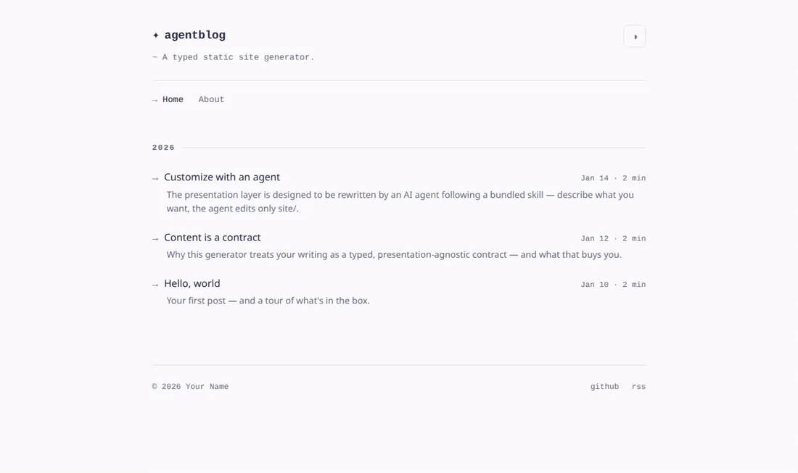
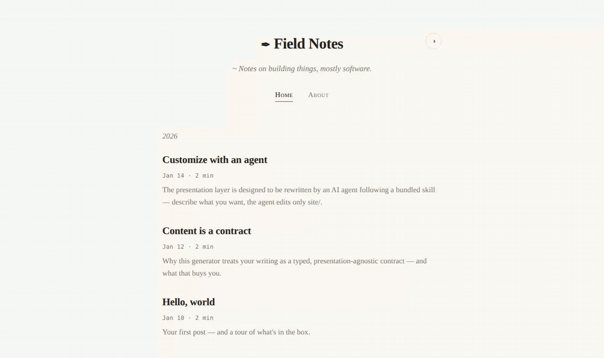
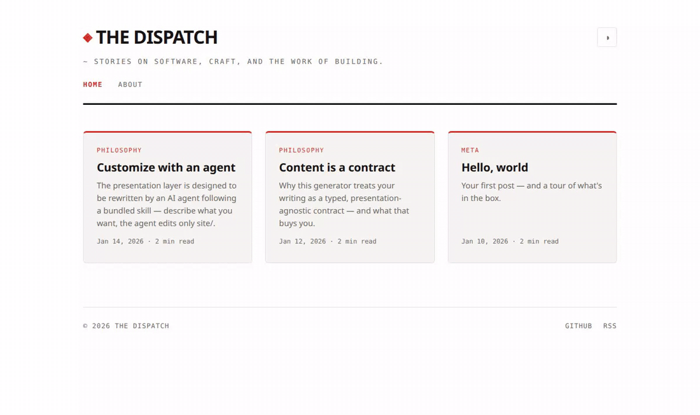
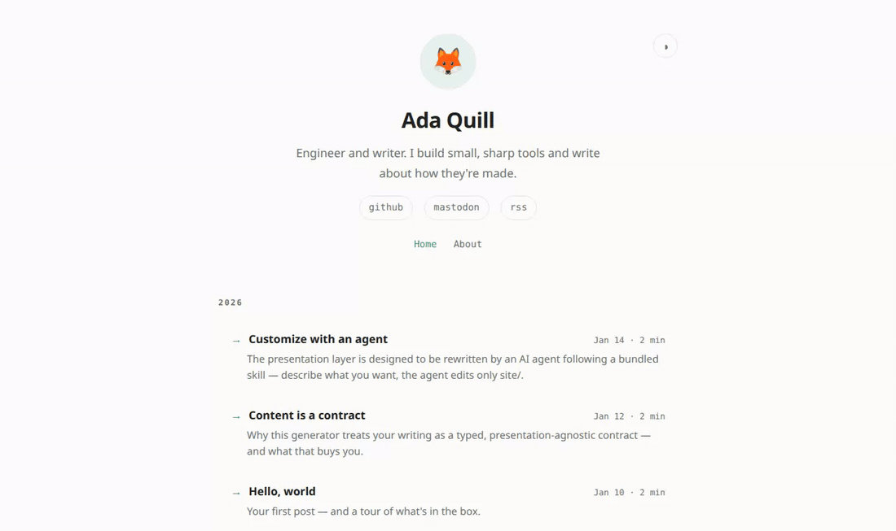
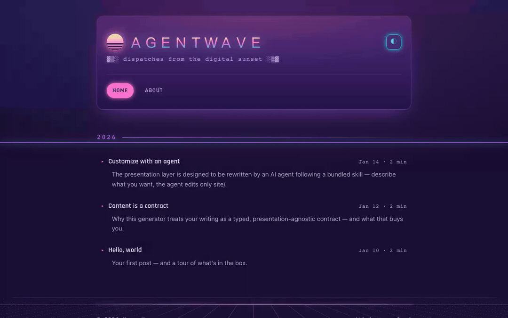
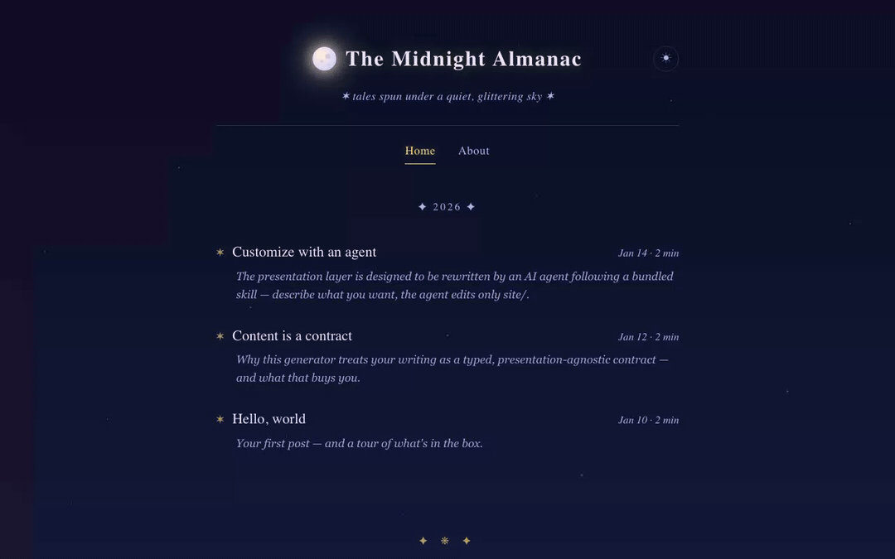

Practical

Terminal / dev
Monospace Tokyo-Night palette with a brand@host header. The default.
View live demo →

Minimal / typographic
One centered serif column on cream paper, generous whitespace, content first.
View live demo →

Editorial / magazine
A bold masthead and a responsive card grid with category kickers and an accent rule.
View live demo →

Personal landing
A centered hero with avatar, tagline, and social links over a compact post list.
View live demo →
Whimsical

Retro 90s web
A Web 1.0 fever dream: tiled wallpaper, a Windows-95 window, a marquee, and a visitor counter.
View live demo →

Hand-drawn notebook
Marker-on-paper: a ruled cream page, handwriting fonts, doodle borders, and a checklist post list.
View live demo →

Vaporwave / synthwave
80s retro-future: a glowing chrome title over a synthwave sun and a neon grid horizon.
View live demo →

Cosmic storybook
A dreamy night sky: a twinkling star field, a glowing moon, and a gold drop-cap serif.
View live demo →